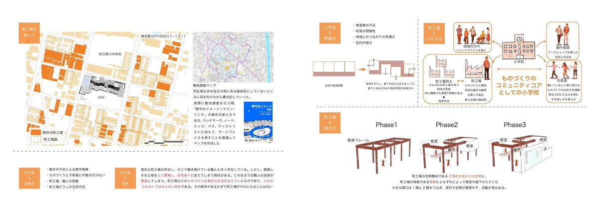
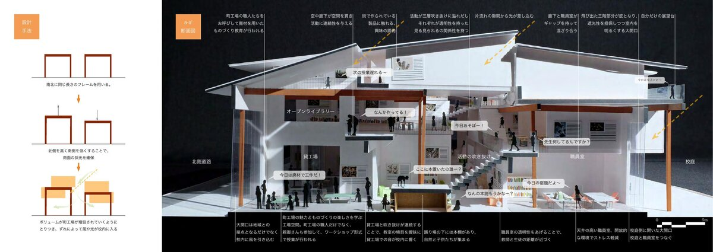
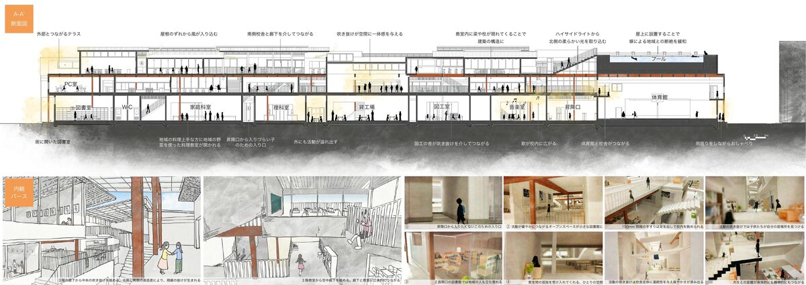
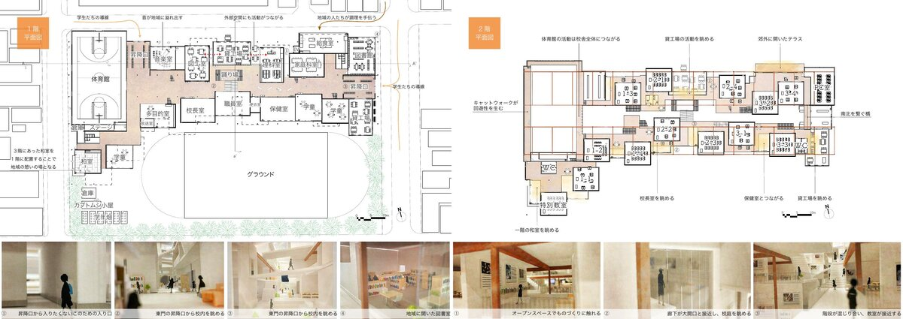
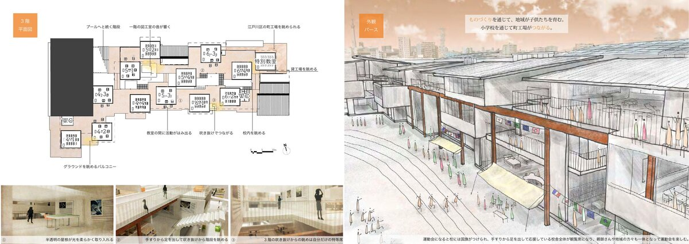

2020 · Design Studio
Tsukuru, Tsunagaruつくる、つながる。
Elementary School as Community Coreものづくりがもたらすコミュニティ・コア
Edogawa-ku in Tokyo developed around a culture of small-scale manufacturing — machikoba (town factories) producing goods and sustaining local livelihoods. Today, these factories are disappearing as land is redeveloped for housing. This project reconsiders the elementary school not as an isolated institution, but as a community core that weaves together children, craftspeople, and residents through the act of making.
東京都江戸川区は、町工場のものづくり文化を基盤として発展してきた地域である。しかし現在、後継者不足や土地の転用により、町工場は減少しつつある。本設計は、小学校を孤立した教育施設としてではなく、ものづくりを通じて子ども・職人・地域住民をつなぐコミュニティの核として再定義する。
The school integrates a rental factory space — open to both students and local craftspeople — into the heart of the building. The structural frame follows the scale of a machikoba bay, allowing the factory space to expand incrementally as the community grows. A double-height void connects factory floor, classroom corridor, and rooftop in a single visual sweep, making the act of making continuously visible to everyone in the building.
設計の中心は、児童と町工場の職人が共に使う貸工場スペース。町工場のスパンに合わせた鉄骨フレームを採用し、コミュニティの成長に合わせて増設できる構成とした。吹き抜けを通じて工場・廊下・屋上が視覚的につながり、「つくる」行為が建物全体から常に見え、感じられる空間を実現した。
Aerial perspective俯瞰パース




